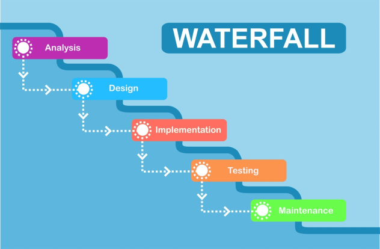
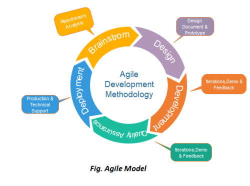

WEBSITE SISTEM INFORMASI KESEHATAN
Menyajikan informasi terkait pengembangan sistem informasi kesehatan.
Menyajikan informasi terkait pengembangan sistem informasi kesehatan.
Sistem Informasi Kesehatan merupakan salah satu elemen penting dalam upaya meningkatkan kualitas layanan kesehatan. Dengan memanfaatkan teknologi informasi, pengumpulan, pengolahan, dan penyajian data kesehatan dapat dilakukan dengan lebih efektif dan efisien. Sistem ini mencakup berbagai aspek, mulai dari rekam medis elektronik, manajemen rumah sakit, hingga sistem pengawasan kesehatan masyarakat.
Implementasi yang baik memerlukan kolaborasi antara tenaga kesehatan, pengembang sistem, dan pihak terkait lainnya untuk memastikan sistem ini dapat memenuhi kebutuhan pengguna dan mendukung pengambilan keputusan yang tepat.
Salah satu contoh implementasi sistem ini adalah penerapan rekam medis elektronik yang memudahkan dokter dalam mengakses riwayat kesehatan pasien secara real-time. Hal ini tidak hanya mengurangi risiko kesalahan medis, tetapi juga meningkatkan efisiensi waktu dan biaya dalam proses pengobatan.
Selain itu, pengembangan sistem informasi kesehatan juga mencakup pengawasan kesehatan masyarakat, seperti pemantauan kasus penyakit menular dan pelaporan vaksinasi. Dengan sistematisnya pengolahan data kesehatan, dapat diperoleh informasi yang akurat untuk mendukung kebijakan kesehatan yang lebih baik.
Penggunaan sistem informasi kesehatan juga semakin penting dalam menghadapi tantangan global, seperti pandemi COVID-19. Dengan teknologi yang terintegrasi, data kesehatan masyarakat dapat dipantau secara efisien, dan respons terhadap krisis kesehatan dapat dilakukan dengan cepat dan tepat.
Dalam pengembangan sistem informasi, terdapat beberapa model yang umum digunakan untuk mendefinisikan tahapan pengembangan sistem. Beberapa model yang sering digunakan dalam Software Development Life Cycle (SDLC) adalah sebagai berikut:
Model Waterfall adalah salah satu model SDLC yang paling klasik dan pertama kali dikembangkan. Model ini mengikuti pendekatan linier, di mana setiap fase harus diselesaikan sepenuhnya sebelum melanjutkan ke fase berikutnya. Tahapan yang ada dalam model Waterfall adalah:
Kelebihan model Waterfall adalah kesederhanaan dan kemudahan dalam pengelolaan proyek, namun kelemahannya adalah kurangnya fleksibilitas untuk melakukan perubahan setelah fase awal.
Model Agile adalah pendekatan yang lebih fleksibel dan iteratif dalam pengembangan perangkat lunak. Model ini lebih fokus pada kolaborasi tim dan adaptasi cepat terhadap perubahan. Pengembangan dilakukan dalam siklus pendek yang disebut sprint, di mana tim mengembangkan bagian perangkat lunak tertentu dalam waktu singkat, lalu melakukan evaluasi dan perbaikan sebelum melanjutkan ke bagian berikutnya.
Agile lebih cocok untuk proyek yang dinamis dengan kebutuhan yang dapat berubah seiring waktu. Beberapa metodologi Agile yang populer adalah Scrum, Kanban, dan Extreme Programming (XP).
Model Prototype adalah pendekatan di mana prototipe sistem awal dibuat dan diuji oleh pengguna untuk mendapatkan umpan balik mengenai fungsionalitas dan desainnya. Prototipe tersebut kemudian diperbaiki dan disempurnakan berdasarkan umpan balik hingga menghasilkan sistem yang final. Model ini cocok untuk proyek yang memiliki kebutuhan yang tidak jelas pada awalnya atau berubah secara dinamis.
Dalam pengembangan sistem menggunakan model Prototype, terdapat beberapa tahapan, yaitu:

SISTEM INFORMASI KESEHATAN
SYARIFAH THALHAH ASYATHRY
211060007